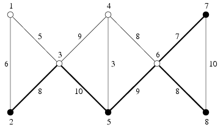

第一行包含两个正整数n,m(2<=n<=5000,1<=m<=500000)，表示点数和边数。
接下来m行，每行包含三个正整数a,b,u(1<=a,b<=n,a!=b,1<=u<=100000)，表示a和b之间有一条费用为u的道路。
最后一行的开头为一个正整数p(2<=p<=n,p*m<=15000000)，表示必须要保留的点数。
接下来包含p个正整数，按递增顺序依次给出必须保留的点的编号。
8 11
1 2 6
3 1 5
2 3 8
3 4 9
3 5 10
5 4 3
5 6 9
6 4 8
6 8 8
6 7 7
8 7 10
4 2 5 7 8
42 5
2 3
3 5
5 6
6 7
6 8